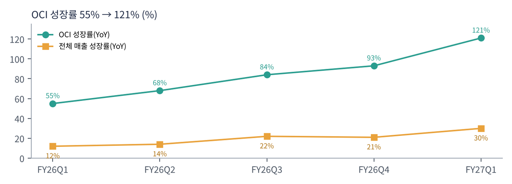

오라클은 기업용 데이터베이스(DB) 1위 회사다. 은행·통신·정부의 핵심 데이터가 오라클 DB에 저장돼 있다. 2010년대에는 클라우드 전환에 늦었다는 평가를 받았지만, 2023년 이후 AI 학습용 GPU 클러스터를 빠르게 지을 수 있는 OCI의 구조가 오픈AI·메타 등 대형 AI 기업의 수요와 맞아떨어지며 'AI 인프라 회사'로 재평가받았다. 2025년 9월 RPO 급증 발표 때 주가가 하루 만에 30% 넘게 올랐다.
| 항목 | 내용 |
|---|---|
| 종목 | Oracle Corporation (ORCL) · 소프트웨어·클라우드 · 1977년 설립 · 본사 텍사스주 오스틴 |
| 경영진 | 클레이 마구이크·마이크 시실리아 공동 CEO(2025년 9월~), 래리 엘리슨 회장 겸 CTO |
| 시가총액 | 약 $351B · PER 18.7배 (11/6 종가 기준) |
| 최근 분기(FY27 1Q) | 매출 $19.3B(+30%), 클라우드 합계 $11.6B(+62%), 순이익 $4.8B |
| 재무 구조 | 부채 약 $125B, 현금 $36.4B, 유형자산 $127.8B(한 분기 전 $100.0B). 분기 배당 $0.50 |
| 분기(회계) | 매출 | OCI | SaaS | 순이익 | 영업현금 | 설비투자 | 잉여현금 |
|---|---|---|---|---|---|---|---|
| FY25 2Q | ~$14.1B | ~$2.4B | — | — | — | — | — |
| FY25 3Q | ~$14.1B | ~$2.7B | — | — | — | — | — |
| FY25 4Q | ~$15.9B | ~$3.0B | — | — | — | — | — |
| FY26 1Q | $14.9B | $3.3B | $3.8B | $2.9B | $8.1B | $8.5B | -$0.4B |
| FY26 2Q | $16.1B | $4.1B | $3.9B | $6.1B | $2.1B | $12.0B | -$10.0B |
| FY26 3Q | $17.2B | $4.9B | $4.0B | $3.7B | $7.2B | $18.6B | -$11.5B |
| FY26 4Q | $19.2B | $5.8B | $4.1B | $4.3B | $14.6B | $16.5B | -$1.9B |
| FY27 1Q | $19.3B | $7.4B | $4.2B | $4.8B | $23.1B | $28.5B | -$5.4B |
FY26 2Q 순이익에는 암페어 지분 매각 이익이 포함됐다. FY25 분기는 성장률 역산 근사치이며 현금흐름은 확보하지 못했다.

OCI가 회사를 끌고 간다. 2년 전 분기 $2.4B였던 OCI가 $7.4B가 됐고, 매출 비중은 17%에서 38%로 올랐다. 반면 전통 소프트웨어(라이선스·지원) 매출은 $5.6B(-3%)로 줄고 있다. 오라클은 '라이선스를 파는 회사'에서 'GPU 연산을 임대하는 회사'로 매출의 성격이 바뀌는 중이다.

성장은 가속, 전체 매출은 그 뒤를 따른다. OCI 성장률이 55% → 68% → 84% → 93% → 121%로 다섯 분기 연속 올라갔다. 전체 매출 성장률도 12%에서 30%로 따라 올라왔다. 회사는 FY27 매출 $90B 이상(약 +34%)을 제시했다.

문제는 현금이다. FY26 한 해 설비투자 $55.7B는 영업현금흐름 $32.0B의 1.7배였다. FY27 1분기 영업현금흐름 $23.1B는 사상 최대였지만, 그중 $11.4B가 고객이 미리 낸 선수금이다. 고객이 돈을 미리 내야 데이터센터를 지을 수 있는 구조라는 뜻이기도 하다. 감가상각비는 분기 $3.2B로 늘었고 이자비용도 $0.9B → $1.4B로 올랐다. 공장(데이터센터)이 가동될수록 비용도 커진다.
| 항목 | FY27 2Q | FY27 연간 |
|---|---|---|
| 매출 성장 | +30~34% | $90B 이상 |
| 클라우드 매출 성장 | +65~71% | |
| 비GAAP EPS | $1.85~1.93 (암페어 이익 제외 +21~25%) | $8.10 |
트레이딩뷰 ORCL 일봉 300개(2025.8 ~ 2026.11.6)와 주봉으로 계산했다. 결론부터 말하면 8개 CTA 신호가 모두 매도인 유일한 종목이다. 이동평균선이 위에서부터 200 > 100 > 50 > 20 > 5일 순서로 완전한 역배열이다.


위: 주봉 재구성 차트. 아래: 트레이딩뷰 일봉 캡처(작도 없이 이동평균선·볼린저밴드만 표시).
| 이동평균 | 값 | 종가 대비 | 해석 |
|---|---|---|---|
| 5일선 | $120.1 | -3.3% | 신저가 갱신 중 |
| 20일선 | $129.4 | -10.3% | 10월 말 반등 실패선 |
| 50일선 | $139.1 | -16.5% | 9~10월 박스 중심 |
| 100일선 | $140.7 | -17.5% | 50일선과 겹침 |
| 200일선 | $155.4 | -25.3% | 50일선이 아래(데드크로스) |
주봉 흐름: 2025년 9월 RPO 발표로 $235 → $346 → 이후 AI 자금 조달 우려로 12월 $198, 2026년 2월 $135까지 하락 → 4~6월 AI 수요 재부각으로 6/1 $250 회복 → 7월 다시 $115로 폭락 → 9월 실적 전후 $171까지 반등했다가 → 10~11월 다섯 주 연속 하락, 11/6 장중 $109.2 신저가. 1년 동안 고점-저점 왕복이 세 번이었다. 변동성이 성장주가 아니라 신용 위험 자산처럼 움직인다.
| 규칙 | 기준 | 현재 값 | 신호 |
|---|---|---|---|
| 장기 추세 필터 | 종가 vs 200일선 | $116.1 < $155.4 | 매도 |
| 중장기 교차 | 50일선 vs 200일선 | $139.1 < $155.4 | 매도 |
| 단기 교차 | 20일선 vs 50일선 | $129.4 < $139.1 | 매도 |
| 돈키언 채널 | 55일 고가 $170.7 / 저가 $109.2 | 11/6 55일 최저가 | 매도 |
| 1개월 모멘텀 | 21거래일 수익률 | -14.4% (기준 $135.7) | 매도 |
| 3개월 모멘텀 | 63거래일 수익률 | -23.1% (기준 $151.1) | 매도 |
| 6개월 모멘텀 | 126거래일 수익률 | -40.7% (기준 $196.0) | 매도 |
| 12개월 모멘텀 | 252거래일 수익률 | -53.6% (기준 $250.3) | 매도 |
| 종합 (8개 평균) | -1.00 | 전면 매도 | |
해석: 추세추종 자금 입장에서는 최대 공매도 포지션이 정당화되는 차트다. 반대로 말하면 추세 매도 물량이 이미 다 나온 상태일 수도 있다. 14일 ATR $8.9(7.7%)로 하루 ±$9 움직임이 보통이다. 다음 실적 발표(약 36일 뒤, 12월 중순)가 가장 큰 변수다.
| 가격 | 무엇이 바뀌나 | 의미 |
|---|---|---|
| $130 | 20일선 회복 | 단기 반등 확인, 1개월 모멘텀 매수 근접($136) |
| $139 ~ 141 | 50·100일선, 돈키언 중간값 | 채널·단기 교차 매수 전환 |
| $151 | 3개월 모멘텀 기준 | 중기 모멘텀 매수 |
| $155 | 200일선 | 장기 추세 복귀 |
| 구분 | 가격대 | 근거 |
|---|---|---|
| 저항 2 | $139 ~ 155 | 50·100·200일선 |
| 저항 1 | $126 ~ 131 | 10월 말 반등 고점, 20일선 |
| 지지 1 | $109 ~ 116 | 11/6 신저가, 7월 저점($115) |
| 지지 2 | $95 ~ 100 | 심리적 $100 라운드 넘버 |
기본 판단: 수주는 역대급, 자금 조달은 역대급 부담. RPO $664B는 계약이 이행되기만 하면 매출이 몇 년 동안 늘어난다는 뜻이다. 그러나 그 계약을 이행하려면 데이터센터를 먼저 지어야 하고, 그 돈을 빚과 신주 발행, 고객 선수금으로 마련하고 있다. 시장은 이 구조를 '레버리지 AI 베팅'으로 본다. 주요 고객(오픈AI 등)의 지불 능력에 대한 의문이 커질 때마다 오라클 주가가 가장 먼저 흔들린다.
| 가격대 | 시나리오 | 대응 |
|---|---|---|
| $155 이상 | 추세 복귀 | 2차 익절 후 잔여 추종 |
| $130 ~ 140 | 반등 확인 | 분할 매수 80% |
| $109 ~ 130 | 바닥 탐색 | 관망 (기존 보유자는 $104 손절선 유지) |
| $104 이하 종가 | 지지 붕괴 | 손절 |
| $95 이하 | 신용 위기 반영 | 관망 |
| 사업 | 돈을 버는 방식 | FY27 1Q | 성장 |
|---|---|---|---|
| 클라우드 인프라 (OCI) | GPU·CPU 연산, 스토리지, DB 서비스를 사용량·장기 계약으로 임대. AI 학습·추론 클러스터가 핵심 | $7.4B | +121% |
| 클라우드 앱 (SaaS) | 퓨전 ERP, 넷스위트, 헬스케어(서너) 등 구독 | $4.2B | +10% |
| 소프트웨어 라이선스·지원 | 온프레미스 DB·미들웨어 라이선스와 연간 유지보수. 이익률이 가장 높은 '현금 젖소' | $5.6B | -3% |
| 하드웨어 | 엑사데이터 등 DB 전용 서버 | $0.8B | — |
| 서비스 | 컨설팅·교육 | $1.4B | — |
오라클은 지금 '높은 이익률·낮은 투자' 사업을 '낮은 이익률·막대한 투자' 사업으로 바꾸는 중이다. 라이선스·지원은 투자 없이 현금이 나오지만 줄고 있고, OCI는 매출이 폭증하지만 GPU와 전력·건물에 선투자가 필요하다. 감가상각비 급증($1.35B → $3.16B)이 이 전환의 비용이다.
오라클의 그림은 '기업 데이터가 있는 곳에서 AI를 돌린다'로 요약된다. 세계 주요 기업의 핵심 데이터가 이미 오라클 DB에 있으므로, 그 데이터를 밖으로 옮기지 않고 같은 클라우드에서 AI 모델을 학습·추론시키는 것이 가장 효율적이라는 논리다.
| 축 | 내용 |
|---|---|
| AI 학습 인프라 | 초대형 GPU 클러스터를 빠르게 짓고 임대. RPO의 대부분 |
| AI 추론 + 데이터 | 오라클 DB 안에 벡터 검색·AI 기능 내장. 데이터 이동 없이 추론 |
| AI 데이터 플랫폼 | 기업 데이터에서 '온톨로지'(업무 개념·관계 지도)를 자동 생성. 회사 발표문에서 팔란티어가 개척한 개념을 완전 자동화했다고 직접 언급 |
| 산업 앱 | 헬스케어 전자의무기록(EHR)에 에이전트 AI 적용 등 업종별 SaaS |
| 항목 | 회사의 말 (FY27 1Q) | 읽는 법 |
|---|---|---|
| 수요 | AI 학습·추론 수요가 공급보다 빠르게 늘고 있다. 한 분기 신규 AI 클라우드 계약 $30B 이상 | 수요 문제는 없음 |
| 공급 | 4분기 말 이후 GPU 30만 개 이상 공급(4분기 용량의 약 3배), 데이터센터 850MW 추가 | 실행 속도 증명 |
| 자금 | ATM 방식으로 주식 $20B 매각. 추가 자본 조달이 실적 전망에 영향을 주지 않는다고 설명 | 희석 우려 진화 시도 |
| 전망 | FY27 매출 $90B 이상, 비GAAP EPS $8.10 | 성장률 가이던스 유지 |
오라클 코멘트에는 '수요 둔화'라는 말이 없다. 문제는 수요가 아니라 돈과 시간이다. 데이터센터를 짓는 동안 현금은 먼저 나가고 매출은 나중에 들어온다. 트레이딩뷰 뉴스는 오라클이 빅테크의 대규모 회사채 발행 흐름에 합류했다고 전했다.
성장률이 다섯 분기 연속 가속. RPO $664B가 몇 년에 걸쳐 매출로 바뀐다. 다만 GPU 임대는 마진이 소프트웨어보다 훨씬 낮고, 고객 집중도가 높다.
안정적인 두 자릿수 성장. 헬스케어 EHR에 에이전트 AI를 붙이는 등 앱에서도 AI를 수익화하려 한다.
천천히 줄지만 여전히 이익의 큰 축. 고객이 클라우드로 옮기면 OCI 매출로 대체된다.
부채 약 $125B, 이자비용 분기 $1.4B. 잉여현금흐름이 플러스로 돌아서는 시점이 주가 재평가의 조건이다.
| 경쟁/리스크 | 내용 | 강도 |
|---|---|---|
| 자금 조달 | 설비투자 > 영업현금, 부채 $125B, 주식 발행. 금리·신용 시장에 민감 | 높음 |
| 고객 집중 | RPO의 큰 몫이 소수 AI 기업에 집중된 것으로 알려짐. 고객의 지불 능력이 곧 오라클의 리스크 | 높음 |
| 하이퍼스케일러 | AWS·애저·구글 클라우드, 코어위브 등 GPU 클라우드와 가격 경쟁 | 중간 |
| 이익률 희석 | GPU 임대 비중 확대와 감가상각비 증가로 전사 이익률 하락 압력 | 중간 |
| AI 투자 사이클 | AI 투자 둔화 시 가장 큰 타격을 받는 '레버리지' 위치 | 참고 |
12월 FY27 2분기 실적이 분수령이다. 매출 +30~34%보다 잉여현금흐름, 설비투자 규모, 추가 자금 조달 여부가 주가를 정할 것이다. 차트는 신저가 구간이라 바닥 확인이 먼저다.
RPO가 계획대로 매출로 바뀌고 설비투자가 정점을 지나면 현금흐름이 크게 좋아진다. 그때 오라클은 '연 매출 $100B 이상의 AI 인프라 회사'가 된다. 반대로 고객 쪽에서 문제가 생기면 막대한 고정비가 남는다.